非常棒的文章
|
准确阐述了很多概念：
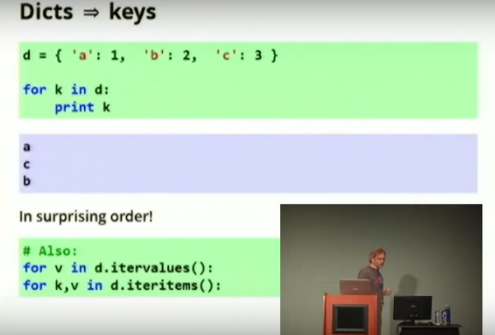 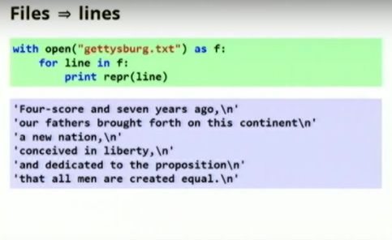 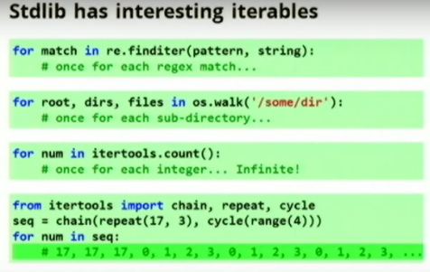 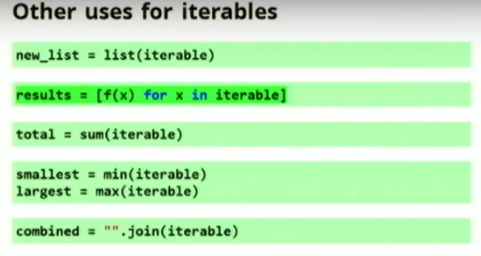 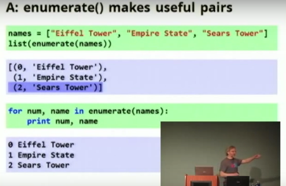 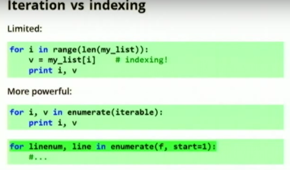 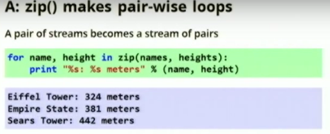 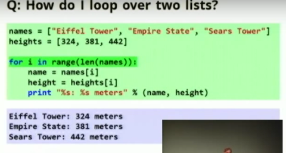 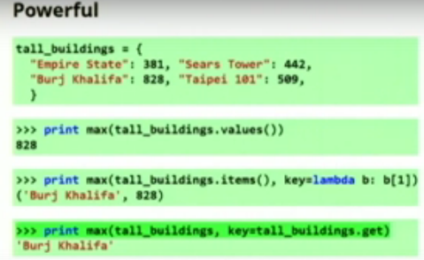 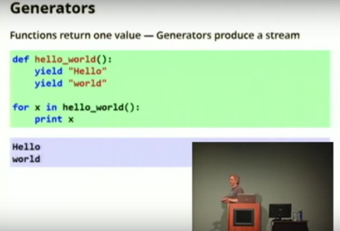 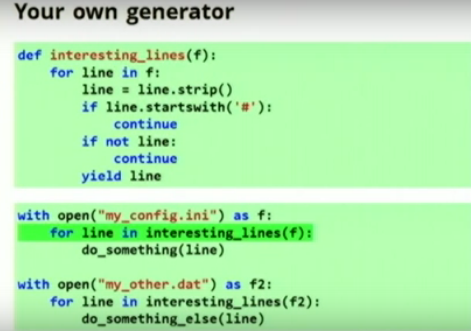 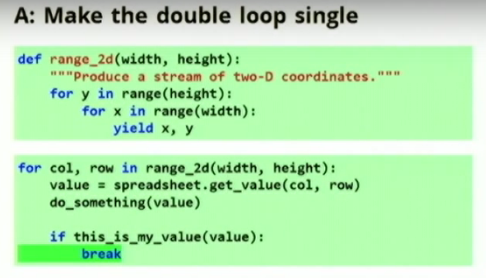 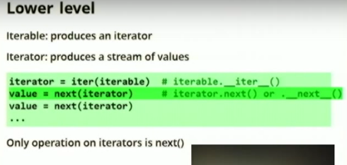 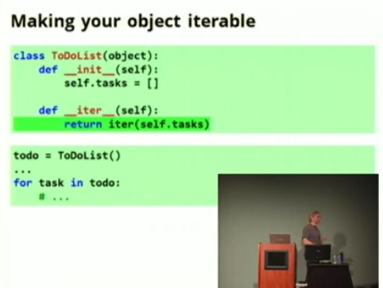 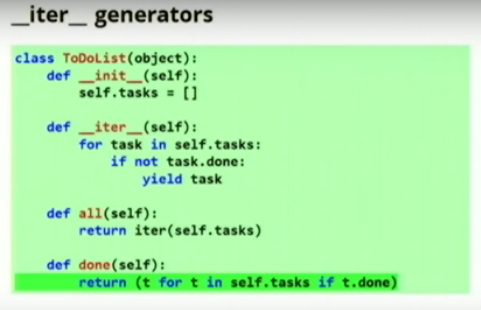
|

yield生成器(generator)
|
我们调用一个普通的Python函数时，一般是从函数的第一行代码开始执行，结束于return语句、异常或者函数结束（可以看作隐式的返回None）。一旦函数将控制权交还给调用者，就意味着全部结束。函数中做的所有工作以及保存在局部变量中的数据都将丢失。再次调用这个函数时，一切都将从头创建。
对于在计算机编程中所讨论的函数，这是很标准的流程。这样的函数只能返回一个值，不过，有时可以创建能产生一个序列的函数还是有帮助的。要做到这一点，这种函数需要能够“保存自己的工作”。
我说过，能够“产生一个序列”是因为我们的函数并没有像通常意义那样返回。return隐含的意思是函数正将执行代码的控制权返回给函数被调用的地方。而"yield"的隐含意思是控制权的转移是临时和自愿的，我们的函数将来还会收回控制权。 在Python中，拥有这种能力的“函数”被称为生成器，它非常的有用。生成器（以及yield语句）最初的引入是为了让程序员可以更简单的编写用来产生值的序列的代码。 以前，要实现类似随机数生成器的东西，需要实现一个类或者一个模块，在生成数据的同时保持对每次调用之间状态的跟踪。引入生成器之后，这变得非常简单。 什么是生成器一个生成器函数的定义很像一个普通的函数，除了当它要生成一个值的时候，使用yield关键字而不是return。如果一个def的主体包含yield，这个函数会自动变成一个生成器（即使它包含一个return）。除了以上内容，创建一个生成器没有什么多余步骤了。 生成器函数返回生成器的迭代器。这可能是你最后一次见到“生成器的迭代器”这个术语了， 因为它们通常就被称作“生成器”。要注意的是生成器就是一类特殊的迭代器。作为一个迭代器，生成器必须要定义一些方法(method)，其中一个就是__next__()。如同迭代器一样，我们可以使用next()函数来获取下一个值。 为了从生成器获取下一个值，我们使用next()函数，就像对付迭代器一样。 (next()会操心如何调用生成器的__next__()方法)。既然生成器是一个迭代器，它可以被用在for循环中。 每当生成器被调用的时候，它会返回一个值给调用者。在生成器内部使用yield来完成这个动作(例如yield 7)。为了记住yield到底干了什么，最简单的方法是把它当作专门给生成器函数用的特殊的return(加上点小魔法)。 一个带有 yield 的函数就是一个 generator，它和普通函数不同，生成一个 generator 看起来像函数调用，但不会执行任何函数代码，直到对其调用 next()（在 for 循环中会自动调用 next()）才开始执行。 python 3.0以后变成next关键字，用法为： next(gen)
yield的基本用法yield类似于return。只是返回的值会一个接一个，而且不是立即返回。
def aa(): # 定义一个生成器函数
yield "AA"
yield 123
yield "---------"
yield "***"
p=aa() #执行产生生成器
next(p) > >"AA"
next(p) > >123
next(p) > >"---------"
next(p) > >"***"
另一种迭代器用法：
for i in p:
print i
> >"AA"
> >123
> >"---------"
> >"***"
yield无穷序列那么神奇的部分在哪里?我很高兴你问了这个问题!当一个生成器函数调用yield，生成器函数的“状态”会被冻结，所有的变量的值会被保留下来，下一行要执行的代码的位置也会被记录，直到再次调用next()。一旦next()再次被调用，生成器函数会从它上次离开的地方开始。如果永远不调用next()，yield保存的状态就被无视了。 我们来重写get_primes()函数，这次我们把它写作一个生成器。注意我们不再需要magical_infinite_range函数了。使用一个简单的while循环，我们创造了自己的无穷串列。
def get_primes(number):
while True:
if is_prime(number):
yield number
number += 1
如果生成器函数调用了return，或者执行到函数的末尾，会出现一个StopIteration异常。 这会通知next()的调用者这个生成器没有下一个值了(这就是普通迭代器的行为)。这也是这个while循环在我们的get_primes()函数出现的原因。如果没有这个while，当我们第二次调用next()的时候，生成器函数会执行到函数末尾，触发StopItertion异常。
|